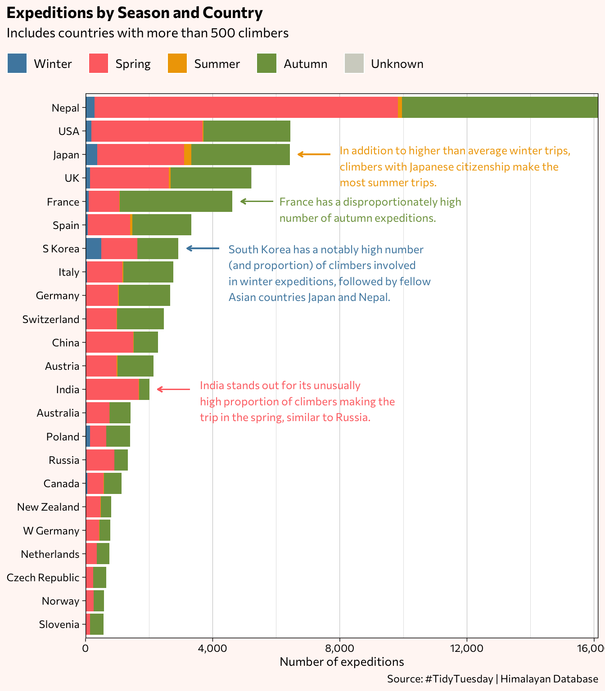
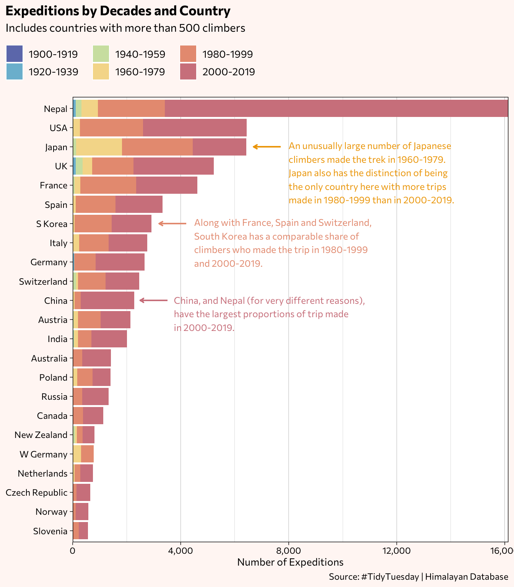
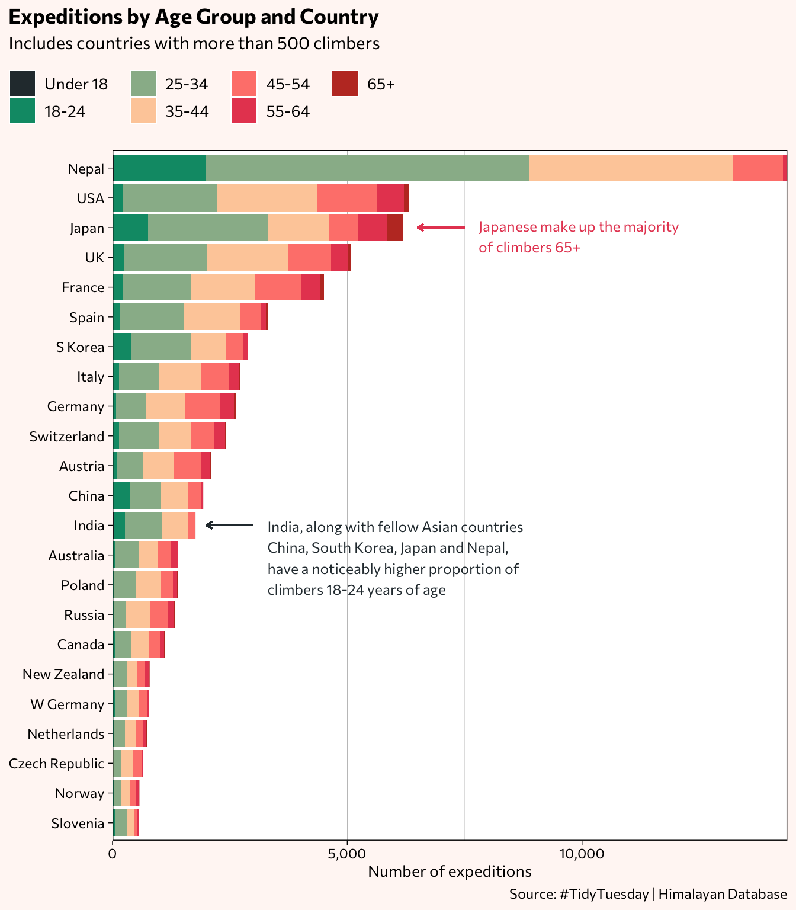
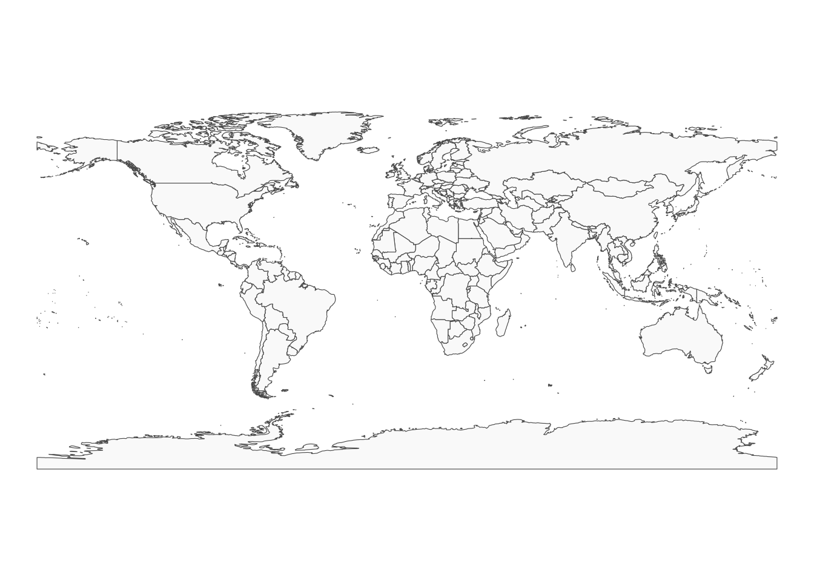
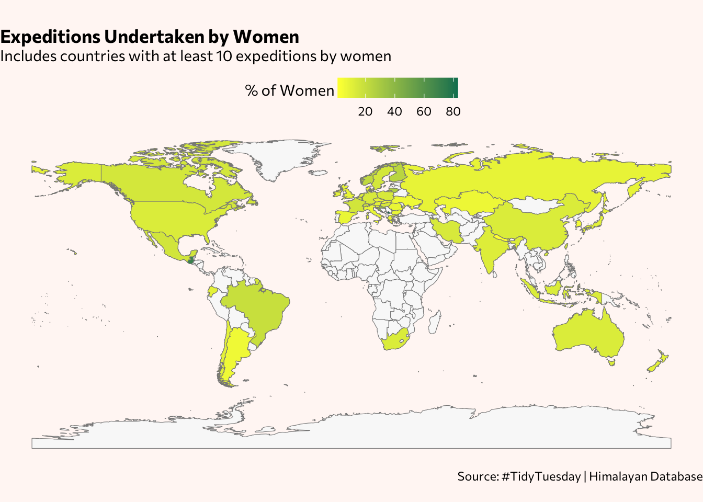
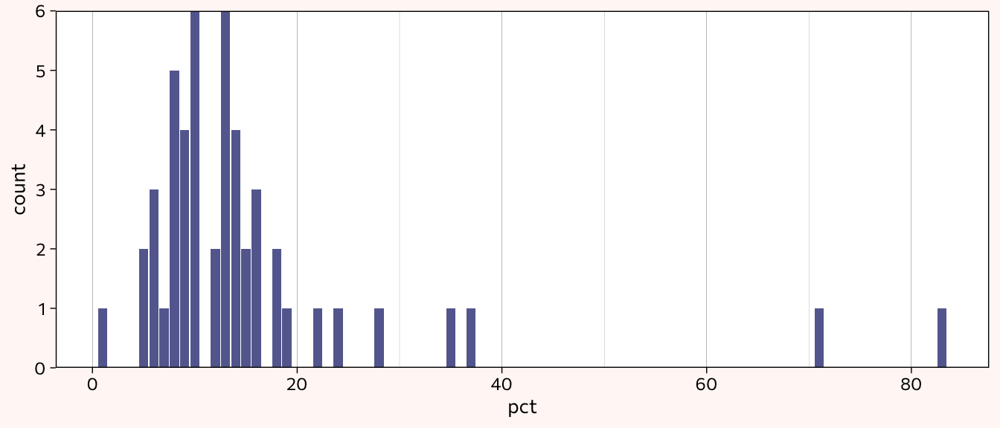
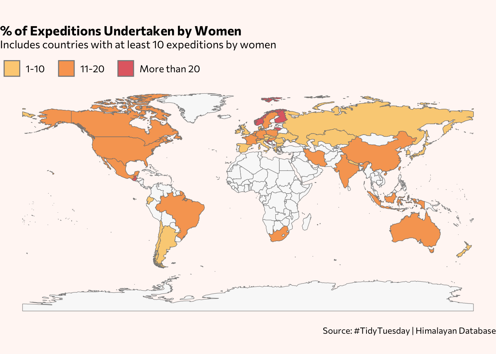

Tidy Tuesday is a weekly project that provides a dataset for R users to explore and visualize. On September 22, 2020, it featured data from The Himalayan Database, which contains information on expeditions from 1905 through spring 2019 (the online database itself goes up to spring 2021) that scaled more than 465 major peaks in the Nepal Himalayas.
According to the Himalayan Database:
The database is based on the expedition archives of Elizabeth Hawley, a longtime journalist based in Kathmandu, and it is supplemented by information gathered from books, alpine journals and correspondence with Himalayan climbers.
(…)
Each expedition record contains detailed information including dates, routes, camps, use of supplemental oxygen, successes, deaths and accidents.Each expedition record contains biographical information for all members listed on the permit as well as for hired members (e.g., Sherpas) for which there are significant events such as a summit success, death, accident or rescue.
This post shows the exploration process of two of the datasets, and uses the tidyverse set of R packages for data wrangling and visualization.
Starting out with an overview of the records:
glimpse(expeditions)Rows: 10,364
Columns: 16
$ expedition_id <chr> "ANN260101", "ANN269301", "ANN273101", "ANN278301",…
$ peak_id <chr> "ANN2", "ANN2", "ANN2", "ANN2", "ANN2", "ANN2", "AN…
$ peak_name <chr> "Annapurna II", "Annapurna II", "Annapurna II", "An…
$ year <dbl> 1960, 1969, 1973, 1978, 1979, 1980, 1980, 1981, 198…
$ season <chr> "Spring", "Autumn", "Spring", "Autumn", "Autumn", "…
$ basecamp_date <date> 1960-03-15, 1969-09-25, 1973-03-16, 1978-09-08, NA…
$ highpoint_date <date> 1960-05-17, 1969-10-22, 1973-05-06, 1978-10-02, 19…
$ termination_date <date> NA, 1969-10-26, NA, 1978-10-05, 1979-10-20, 1980-0…
$ termination_reason <chr> "Success (main peak)", "Success (main peak)", "Succ…
$ highpoint_metres <dbl> 7937, 7937, 7937, 7000, 7160, 7000, 7250, 6400, 740…
$ members <dbl> 10, 10, 6, 2, 3, 6, 7, 19, 9, 5, 5, 5, 6, 4, 3, 4, …
$ member_deaths <dbl> 0, 0, 0, 0, 0, 1, 0, 0, 1, 0, 1, 0, 0, 0, 0, 0, 0, …
$ hired_staff <dbl> 9, 0, 8, 0, 0, 2, 2, 0, 3, 0, 0, 3, 4, 2, 0, 2, 5, …
$ hired_staff_deaths <dbl> 0, 0, 0, 0, 0, 0, 0, 0, 0, 0, 0, 0, 0, 0, 0, 0, 0, …
$ oxygen_used <lgl> TRUE, FALSE, FALSE, FALSE, FALSE, FALSE, FALSE, FAL…
$ trekking_agency <chr> NA, NA, NA, NA, NA, NA, NA, NA, NA, NA, NA, "Kunga"…glimpse(members)Rows: 76,519
Columns: 21
$ expedition_id <chr> "AMAD78301", "AMAD78301", "AMAD78301", "AMAD78301…
$ member_id <chr> "AMAD78301-01", "AMAD78301-02", "AMAD78301-03", "…
$ peak_id <chr> "AMAD", "AMAD", "AMAD", "AMAD", "AMAD", "AMAD", "…
$ peak_name <chr> "Ama Dablam", "Ama Dablam", "Ama Dablam", "Ama Da…
$ year <dbl> 1978, 1978, 1978, 1978, 1978, 1978, 1978, 1978, 1…
$ season <chr> "Autumn", "Autumn", "Autumn", "Autumn", "Autumn",…
$ sex <chr> "M", "M", "M", "M", "M", "M", "M", "M", "M", "M",…
$ age <dbl> 40, 41, 27, 40, 34, 25, 41, 29, 35, 37, 23, 44, 2…
$ citizenship <chr> "France", "France", "France", "France", "France",…
$ expedition_role <chr> "Leader", "Deputy Leader", "Climber", "Exp Doctor…
$ hired <lgl> FALSE, FALSE, FALSE, FALSE, FALSE, FALSE, FALSE, …
$ highpoint_metres <dbl> NA, 6000, NA, 6000, NA, 6000, 6000, 6000, NA, 681…
$ success <lgl> FALSE, FALSE, FALSE, FALSE, FALSE, FALSE, FALSE, …
$ solo <lgl> FALSE, FALSE, FALSE, FALSE, FALSE, FALSE, FALSE, …
$ oxygen_used <lgl> FALSE, FALSE, FALSE, FALSE, FALSE, FALSE, FALSE, …
$ died <lgl> FALSE, FALSE, FALSE, FALSE, FALSE, FALSE, FALSE, …
$ death_cause <chr> NA, NA, NA, NA, NA, NA, NA, NA, NA, NA, NA, NA, N…
$ death_height_metres <dbl> NA, NA, NA, NA, NA, NA, NA, NA, NA, NA, NA, NA, N…
$ injured <lgl> FALSE, FALSE, FALSE, FALSE, FALSE, FALSE, FALSE, …
$ injury_type <chr> NA, NA, NA, NA, NA, NA, NA, NA, NA, NA, NA, NA, N…
$ injury_height_metres <dbl> NA, NA, NA, NA, NA, NA, NA, NA, NA, NA, NA, NA, N…Given that each record is of a member of an expedition, how many different expeditions occurred, according to the datasets?
For expeditions, will each row be a unique expedition?
expeditions %>% count(expedition_id, sort=TRUE)# A tibble: 10,363 × 2
expedition_id n
<chr> <int>
1 KANG10101 2
2 ACHN15301 1
3 ACHN15302 1
4 ACHN18301 1
5 AMAD00101 1
6 AMAD00102 1
7 AMAD00103 1
8 AMAD00104 1
9 AMAD00105 1
10 AMAD00106 1
# … with 10,353 more rowsSince KANG10101 appears twice, how do those rows appear?
expeditions %>%
filter(expedition_id=="KANG10101") %>%
datatable(options = list(dom = 't', scrollX = TRUE))They are indeed two different expeditions, a century apart. How many other expeditions have missing values? I’ll use a function from the [naniar](https://naniar.njtierney.com/) package, which shows the number and percentage of missing values for each variable.
naniar::miss_var_summary(expeditions)# A tibble: 16 × 3
variable n_miss pct_miss
<chr> <int> <dbl>
1 termination_date 2380 23.0
2 trekking_agency 1580 15.2
3 basecamp_date 1095 10.6
4 highpoint_date 650 6.27
5 highpoint_metres 414 3.99
6 peak_name 1 0.00965
7 expedition_id 0 0
8 peak_id 0 0
9 year 0 0
10 season 0 0
11 termination_reason 0 0
12 members 0 0
13 member_deaths 0 0
14 hired_staff 0 0
15 hired_staff_deaths 0 0
16 oxygen_used 0 0 For expeditions without a basecamp date, were the reasons?
expeditions %>%
filter(is.na(basecamp_date)) %>%
count(termination_reason)# A tibble: 15 × 2
termination_reason n
<chr> <int>
1 Accident (death or serious injury) 39
2 Attempt rumoured 12
3 Bad conditions (deep snow, avalanching, falling ice, or rock) 47
4 Bad weather (storms, high winds) 54
5 Did not attempt climb 137
6 Did not reach base camp 59
7 Illness, AMS, exhaustion, or frostbite 26
8 Lack (or loss) of supplies or equipment 7
9 Lack of time 1
10 Other 109
11 Route technically too difficult, lack of experience, strength, or moti… 41
12 Success (claimed) 6
13 Success (main peak) 446
14 Success (subpeak) 20
15 Unknown 91Though these trips did not happen in the end, they’re still considered expeditions and KANG10101 as two distinct expeditions. How does this ID appear in the members dataset? Are the two years present there too? (Yes.)
members %>%
filter(expedition_id=="KANG10101")# A tibble: 7 × 21
exped…¹ membe…² peak_id peak_…³ year season sex age citiz…⁴ exped…⁵ hired
<chr> <chr> <chr> <chr> <dbl> <chr> <chr> <dbl> <chr> <chr> <lgl>
1 KANG10… KANG10… KANG Kangch… 1910 Spring M 41 UK Leader FALSE
2 KANG10… KANG10… KANG Kangch… 2010 Spring M 53 S Korea Leader FALSE
3 KANG10… KANG10… KANG Kangch… 2010 Spring M 40 S Korea Climber FALSE
4 KANG10… KANG10… KANG Kangch… 2010 Spring M 47 S Korea Climber FALSE
5 KANG10… KANG10… KANG Kangch… 2010 Spring M 30 S Korea Climber FALSE
6 KANG10… KANG10… KANG Kangch… 2010 Spring M 27 Nepal H-A Wo… TRUE
7 KANG10… KANG10… KANG Kangch… 2010 Spring M 39 Nepal H-A Wo… TRUE
# … with 10 more variables: highpoint_metres <dbl>, success <lgl>, solo <lgl>,
# oxygen_used <lgl>, died <lgl>, death_cause <chr>,
# death_height_metres <dbl>, injured <lgl>, injury_type <chr>,
# injury_height_metres <dbl>, and abbreviated variable names ¹expedition_id,
# ²member_id, ³peak_name, ⁴citizenship, ⁵expedition_roleIs every expedition listed in expeditions also in members? I’ll use the setdiff() function to see if any IDs from expeditions are not found in members.
setdiff(expeditions$expedition_id, members$expedition_id) [1] "ANN186305" "CHEO87301" "DHA149001" "EVER68101" "EVER79102" "GAUR73301"
[7] "KGUR65101" "MAKA34101" "MANA70301" "YALU65101" "YALU67101" "EVER65102"
[13] "EVER19185"There are 13. Any particular commonalities between those expeditions?
expeditions_only <- setdiff(expeditions$expedition_id, members$expedition_id) # creates a character string
expeditions %>%
filter(expedition_id %in% expeditions_only)# A tibble: 13 × 16
exped…¹ peak_id peak_…² year season basecamp…³ highpoin…⁴ terminat…⁵ termi…⁶
<chr> <chr> <chr> <dbl> <chr> <date> <date> <date> <chr>
1 ANN186… ANN1 Annapu… 1986 Autumn NA NA NA Did no…
2 CHEO87… CHEO Cheo H… 1987 Autumn NA NA NA Did no…
3 DHA149… DHA1 Dhaula… 1949 Unkno… NA NA NA Attemp…
4 EVER68… EVER Everest 1968 Spring NA NA NA Attemp…
5 EVER79… EVER Everest 1979 Spring NA NA NA Did no…
6 GAUR73… GAUR Gauris… 1973 Autumn NA NA NA Did no…
7 KGUR65… KGUR Kang G… 1965 Spring NA NA NA Attemp…
8 MAKA34… MAKA Makalu 1934 Spring NA NA NA Did no…
9 MANA70… MANA Manaslu 1970 Autumn NA NA NA Did no…
10 YALU65… YALU Yalung… 1965 Spring NA NA NA Did no…
11 YALU67… YALU Yalung… 1967 Spring NA NA NA Did no…
12 EVER65… EVER Everest 1965 Spring NA NA NA Attemp…
13 EVER19… EVER Everest 2019 Spring NA 2019-05-22 NA Succes…
# … with 7 more variables: highpoint_metres <dbl>, members <dbl>,
# member_deaths <dbl>, hired_staff <dbl>, hired_staff_deaths <dbl>,
# oxygen_used <lgl>, trekking_agency <chr>, and abbreviated variable names
# ¹expedition_id, ²peak_name, ³basecamp_date, ⁴highpoint_date,
# ⁵termination_date, ⁶termination_reason# ANN186305The expeditions range from 1924 through the 1980s, and one from 2019. That one from 2019 is the only successful trip (termination date not available possibly due to it occurring after the end date of the dataset timeframe) while the rest were either rumored attempts or climbs that were not attempted, with one expedition not reaching the base camp.
Any IDs found in members but not in expeditions? (No)
setdiff(members$expedition_id, expeditions$expedition_id)character(0)Therefore, the number of unique expedition IDs in the members data (which has a total 76,519 rows) should be 13 less than number of unique observations in the expeditions data (which, as found earlier, has 10,364 with one “duplicate” ID).
members %>%
count(expedition_id, sort=TRUE)# A tibble: 10,350 × 2
expedition_id n
<chr> <int>
1 EVER88101 99
2 HIML13308 90
3 EVER15106 79
4 EVER08101 76
5 MANA16304 71
6 EVER18185 69
7 EVER73101 68
8 EVER13181 65
9 EVER19117 65
10 EVER17110 64
# … with 10,340 more rowsGoing forward, I’ll focus on the year, season, age, citizenship and gender variables in creating the visualizations. The expedition role specifies the titles of each individuals, with the most commons ones being climber, H-A worker, leader, expedition doctor and deputy leader. In this post all individuals will be referred to as climbers.
Seasons and decades
Do the expeditions tend to occur during certain seasons and has that been the case throughout the decades?
expeditions %>%
mutate(decade = case_when(
year >= "1900" & year <= "1909" ~ "1900-'09",
year >= "1910" & year <= "1919" ~ "'10-'19",
year >= "1920" & year <= "1929" ~ "'20-'29",
year >= "1930" & year <= "1939" ~ "'30-'39",
year >= "1940" & year <= "1949" ~ "'40-'49",
year >= "1950" & year <= "1959" ~ "'50-'59",
year >= "1960" & year <= "1969" ~ "'60-'69",
year >= "1970" & year <= "1979" ~ "'70-'79",
year >= "1980" & year <= "1989" ~ "'80-'89",
year >= "1990" & year <= "1999" ~ "'90-'99",
year >= "2000" & year <= "2009" ~ "2000-'09",
year >= "2010" & year <= "2019" ~ " '10-'19 ",
TRUE ~ "Unknown")) %>%
mutate(year = lubridate::ymd(year, truncated = 2L)) %>%
filter(season != "Unknown") %>%
mutate(season = factor(season, levels=c("Winter", "Spring", "Summer", "Autumn"))) %>%
mutate(decade = factor(decade, levels=c("1900-'09", "'10-'19", "'20-'29", "'30-'39", "'40-'49", "'50-'59", "'60-'69", "'70-'79", "'80-'89", "'90-'99", "2000-'09", " '10-'19 "))) %>%
ggplot(aes(decade, ..count.., fill = season)) +
geom_bar(width = 0.7, alpha = 0.9) +
scale_y_continuous(expand = c(0,0), labels = scales::comma_format()) +
scale_fill_manual(values=c("#4e89ae", "#fe7171", "#f0a500", "#7ea04d")) +
annotate("text", label = "Winter expeditions\npeaked in the '80s",
x = 5, y = 1150, size = 3.5, color = "#4e89ae", family="Commissioner", hjust = 0) +
geom_segment(aes(x = 7.5, y = 1140, xend = 8.4, yend = 1140),
size = 0.45, color = "#4e89ae",
arrow = arrow(length = unit(1.5, "mm"))) +
annotate("text", label = "In the '80s and '90s,\nautumn expeditions\noutnumbered those\nin the spring",
x = 7.5, y = 2200, size = 3.5, color = "#7ea04d", family="Commissioner", hjust = 0) +
theme_linedraw() +
theme(plot.title = element_text(face="bold"),
plot.title.position = "plot",
plot.background = element_rect(fill = "#fff7f5", color = NA),
legend.position = "top",
legend.justification = "left",
legend.direction = "horizontal",
legend.background = element_rect(fill = "#fff7f5", color = NA),
legend.text = element_text(margin = margin(r = 0.28, unit = 'cm'), size = 10),
legend.box.margin = margin(c(0,0,0,-54)),
text = element_text(family = "Commissioner"),
panel.grid.major.x = element_blank(),
panel.grid.minor.x = element_blank()) +
labs(x = NULL,
y = "Number of expeditions",
title = "Slight Seasonal Shifts Over Decades of Expeditions",
subtitle = "Expeditions span 1905-2019",
fill = NULL,
caption = "Source: #TidyTuesday | Himalayan Database")
Rather than relying solely on eyeballing the seasonal proportions, here are the actual percentages listed in tabular form (using the DT package). Now it’s clear more spring expeditions occurred in every decade except for the 1980s and 1990s, during which the autumn months dominated.
library(DT)
expeditions %>%
mutate(decade = case_when(
year >= "1900" & year <= "1909" ~ "1900-1909",
year >= "1910" & year <= "1919" ~ "1910-1919",
year >= "1920" & year <= "1929" ~ "1920-1929",
year >= "1930" & year <= "1939" ~ "1930-1939",
year >= "1940" & year <= "1949" ~ "1940-1949",
year >= "1950" & year <= "1959" ~ "1950-1959",
year >= "1960" & year <= "1969" ~ "1960-1969",
year >= "1970" & year <= "1979" ~ "1970-1979",
year >= "1980" & year <= "1989" ~ "1980-1989",
year >= "1990" & year <= "1999" ~ "1990-1999",
year >= "2000" & year <= "2009" ~ "2000-2009",
year >= "2010" & year <= "2019" ~ "2010-2019 ",
TRUE ~ "Unknown")) %>%
mutate(year = lubridate::ymd(year, truncated = 2L)) %>%
filter(season != "Unknown") %>%
count(decade, season) %>%
group_by(decade) %>%
mutate(pct = round((n/sum(n)*100), digits=1)) %>%
ungroup() %>%
select(-n) %>%
spread(season, pct) %>%
select(Deacde = decade, Winter, Spring, Summer, Autumn) %>%
mutate(Winter = replace_na(Winter, "-")) %>%
mutate(Spring = replace_na(Spring, "-")) %>%
mutate(Summer = replace_na(Summer, "-")) %>%
mutate(Autumn = replace_na(Autumn, "-")) %>%
datatable(options = list(dom = 't',
pageLength = nrow(.)))The rest of the charts focus on the citizenship variable which lists the country or countries of origin for the climbers. Only 10 out of the more than 76,500 expeditions do not have a country or countries listed for the climber. The charts do not include individuals with more than one country of citizenship listed.
First, I’m creating a custom theme (based on the bar chart above) that I’ll use in addition to theme_linedraw().
theme_him <- theme_linedraw() + theme(plot.title = element_text(face="bold"),
plot.title.position = "plot",
plot.background = element_rect(fill = "#fff7f5", color = NA),
legend.position = "top",
legend.justification = "left",
legend.direction = "horizontal",
legend.background = element_rect(fill = "#fff7f5", color = NA),
legend.text = element_text(margin = margin(r = 0.28, unit = 'cm'), size = 10),
legend.box.margin = margin(c(0,0,0,-77)),
text = element_text(family = "Commissioner"),
axis.title = element_text(size = 10),
panel.grid.major.y = element_blank(),
panel.grid.minor.y = element_blank())Do expeditions tend to happen during certain seasons?
members %>%
count(citizenship, season, sort=T) %>%
group_by(citizenship) %>%
filter(sum(n) > 500) %>% # filter by countries with total climbers > 500
mutate(n_country = sum(n)) %>%
ungroup() %>%
mutate(season = factor(season, levels=c("Winter", "Spring", "Summer", "Autumn", "Unknown"))) %>%
mutate(citizenship = fct_reorder(citizenship, n_country)) %>%
ggplot(aes(citizenship, n, fill = season)) +
geom_col(position = position_stack(reverse = TRUE)) +
scale_y_continuous(expand = c(0,0), labels = scales::comma_format()) +
scale_fill_manual(values=c("#4e89ae", "#fe7171", "#f0a500", "#7ea04d", "#d2d3c9")) +
# Japan
annotate("text", label = "In addition to higher than average winter trips,\nclimbers with Japanese citizenship make the\nmost summer trips.",
x = 20.5, y = 8000, size = 3.25, color = "#f0a500", family="Commissioner", hjust = 0) +
geom_segment(aes(x = 21, y = 7700, xend = 21, yend = 6700),
size = 0.45, color = "#f0a500",
arrow = arrow(length = unit(1.5, "mm"))) +
# France
annotate("text", label = "France has a disproportionately high\nnumber of autumn expeditions.",
x = 18.65, y = 6100, size = 3.25, color = "#7ea04d", family="Commissioner", hjust = 0) +
geom_segment(aes(x = 19, y = 5900, xend = 19, yend = 4900),
size = 0.45, color = "#7ea04d",
arrow = arrow(length = unit(1.5, "mm"))) +
# South Korea
annotate("text", label = "South Korea has a notably high number\n(and proportion) of climbers involved\nin winter expeditions, followed by fellow\nAsian countries Japan and Nepal.",
x = 15.95, y = 4500, size = 3.25, color = "#4e89ae", family="Commissioner", hjust = 0) +
geom_segment(aes(x = 17, y = 4200, xend = 17, yend = 3200),
size = 0.45, color = "#4e89ae",
arrow = arrow(length = unit(1.5, "mm"))) +
# India
annotate("text", label = "India stands out for its unusually\nhigh proportion of climbers making the \ntrip in the spring, similar to Russia.",
x = 10.5, y = 3600, size = 3.25, color = "#fe7171", family="Commissioner", hjust = 0) +
geom_segment(aes(x = 11, y = 3275, xend = 11, yend = 2275),
size = 0.45, color = "#fe7171",
arrow = arrow(length = unit(1.5, "mm"))) +
theme_him +
labs(x = NULL,
y = "Number of expeditions",
title = "Expeditions by Season and Country",
subtitle = "Includes countries with more than 500 climbers",
fill = NULL,
caption = "Source: #TidyTuesday | Himalayan Database") +
coord_flip()
While the earlier chart showed that overall, more expeditions occurred in the spring, breaking the data down by countries reveals distinctions, as noted above.
Trips by decades
The next bar chart visualizes the number of trips per 20-year time frames. While the majority of the countries with at least 500 climbers had the largest proportion of trips occur in 2000-2019, take a look at those that did not.
members %>%
mutate(decade = case_when(
year >= "1900" & year <= "1919" ~ "1900-1919",
year >= "1920" & year <= "1939" ~ "1920-1939",
year >= "1940" & year <= "1959" ~ "1940-1959",
year >= "1960" & year <= "1979" ~ "1960-1979",
year >= "1980" & year <= "1999" ~ "1980-1999",
year >= "2000" & year <= "2019" ~ "2000-2019",
TRUE ~ "NA")) %>%
count(citizenship, decade, sort=T) %>%
group_by(citizenship) %>%
filter(sum(n) > 500) %>%
mutate(n_country = sum(n)) %>%
ungroup() %>%
mutate(citizenship = fct_reorder(citizenship, n_country)) %>%
ggplot(aes(citizenship, n, fill = decade)) +
geom_col(position = position_stack(reverse = TRUE)) +
scale_y_continuous(expand = c(0,0), labels = scales::comma_format()) +
scale_fill_manual(values = PNWColors::pnw_palette(name = "Sailboat", n = 6, type = "discrete")) +
# Japan
annotate("text", label = "An unusually large number of Japanese\nclimbers made the trek in 1960-1979.\nJapan also has the distinction of being\nthe only country here with more trips\nmade in 1980-1999 than in 2000-2019.",
x = 19.65, y = 8000, size = 3.25, color = "#f0a500", family="Commissioner", hjust = 0) +
geom_segment(aes(x = 21, y = 7700, xend = 21, yend = 6700),
size = 0.45, color = "#f0a500",
arrow = arrow(length = unit(1.5, "mm"))) +
# South Korea
annotate("text", label = "Along with France, Spain and Switzerland,\nSouth Korea has a comparable share of\nclimbers who made the trip in 1980-1999\nand 2000-2019.",
x = 16, y = 4500, size = 3.25, color = "#E89C81", family="Commissioner", hjust = 0) +
geom_segment(aes(x = 17, y = 4200, xend = 17, yend = 3200),
size = 0.45, color = "#E89C81",
arrow = arrow(length = unit(1.5, "mm"))) +
# China
annotate("text", label = "China, and Nepal (for very different reasons),\nhave the largest proportions of trip made\nin 2000-2019.",
x = 12.3, y = 3750, size = 3.25, color = "#D2848D", family="Commissioner", hjust = 0) +
geom_segment(aes(x = 13, y = 3500, xend = 13, yend = 2500),
size = 0.45, color = "#D2848D",
arrow = arrow(length = unit(1.5, "mm"))) +
theme_him +
labs(x = NULL,
y = "Number of Expeditions",
title = "Expeditions by Decades and Country",
subtitle = "Includes countries with more than 500 climbers",
fill = NULL,
caption = "Source: #TidyTuesday | Himalayan Database") +
coord_flip()
Here are the specific percentages by decade. About half the trips recorded in the dataset occurred between 2000 and 2019.
members %>%
mutate(decade = case_when(
year >= "1900" & year <= "1909" ~ "1900-1909",
year >= "1910" & year <= "1919" ~ "1910-1919",
year >= "1920" & year <= "1929" ~ "1920-1929",
year >= "1930" & year <= "1939" ~ "1930-1939",
year >= "1940" & year <= "1949" ~ "1940-1949",
year >= "1950" & year <= "1959" ~ "1950-1959",
year >= "1960" & year <= "1969" ~ "1960-1969",
year >= "1970" & year <= "1979" ~ "1970-1979",
year >= "1980" & year <= "1989" ~ "1980-1989",
year >= "1990" & year <= "1999" ~ "1990-1999",
year >= "2000" & year <= "2009" ~ "2000-2009",
year >= "2010" & year <= "2019" ~ "2010-2019",
TRUE ~ "NA")) %>%
count(decade, sort=T) %>%
mutate(pct = round(n/sum(n)*100, digit=1))# A tibble: 12 × 3
decade n pct
<chr> <int> <dbl>
1 2010-2019 24832 32.5
2 2000-2009 21327 27.9
3 1990-1999 13746 18
4 1980-1989 10371 13.6
5 1970-1979 3709 4.8
6 1960-1969 1161 1.5
7 1950-1959 953 1.2
8 1930-1939 266 0.3
9 1920-1929 70 0.1
10 1940-1949 68 0.1
11 1900-1909 13 0
12 1910-1919 3 0 Age factor
Asian countries continue to divert from the overall trends of the group of countries, particularly in the case of climber age. Missing values, which for the age variable make up about 4.6%, have been excluded from the chart. Unsurprisingly, the 25-34 and 35-44 age groups make up the largest proportions.
members %>%
mutate(age_range = case_when(
age <= "17" ~ "Under 18",
age >= "18" & age <= "24" ~ "18-24",
age >= "25" & age <= "34" ~ "25-34",
age >= "35" & age <= "44" ~ "35-44",
age >= "45" & age <= "54" ~ "45-54",
age >= "55" & age <= "64" ~ "55-64",
age >= "65" ~ "65+",
TRUE ~ "Unknown")) %>%
filter(age_range != "Unknown") %>%
count(citizenship, age_range, sort=T) %>%
group_by(citizenship) %>%
filter(sum(n) > 500) %>%
mutate(n_country = sum(n)) %>%
ungroup() %>%
mutate(age_range = factor(age_range, levels=c("Under 18", "18-24", "25-34", "35-44", "45-54", "55-64", "65+"))) %>%
mutate(citizenship = fct_reorder(citizenship, n_country)) %>%
ggplot(aes(citizenship, n, fill = age_range)) +
geom_col(position = position_stack(reverse = TRUE)) +
scale_y_continuous(expand = c(0,0), labels = scales::comma_format()) +
paletteer::scale_fill_paletteer_d("awtools::a_palette", direction = 1) +
# Japan
annotate("text", label = "Japanese make up the majority\nof climbers 65+",
x = 20.7, y = 7800, size = 3.25, color = "#E74A60", family="Commissioner", hjust = 0) +
geom_segment(aes(x = 21, y = 7500, xend = 21, yend = 6500),
size = 0.45, color = "#E74A60",
arrow = arrow(length = unit(1.5, "mm"))) +
# India
annotate("text", label = "India, along with fellow Asian countries\nChina, South Korea, Japan and Nepal,\nhave a noticeably higher proportion of\nclimbers 18-24 years of age",
x = 9.9, y = 3300, size = 3.25, color = "#2B363C", family="Commissioner", hjust = 0) +
geom_segment(aes(x = 11, y = 3000, xend = 11, yend = 2000),
size = 0.45, color = "#2B363C",
arrow = arrow(length = unit(1.5, "mm"))) +
theme_him +
labs(y = "Number of expeditions",
x = NULL,
title = "Expeditions by Age Group and Country",
subtitle = "Includes countries with more than 500 climbers",
fill = NULL,
caption = "Source: #TidyTuesday | Himalayan Database") +
coord_flip()
Given the age distinction with Japan, out of all of the country’s climbers, how many, percentage-wise, are older than 65? 6% (To put the number in perspective, the table includes countries with percentages > 1 and number of expeditions > 9. )
members %>%
mutate(age_range = case_when(
age <= "17" ~ "Under 18",
age >= "18" & age <= "24" ~ "18-24",
age >= "25" & age <= "34" ~ "25-34",
age >= "35" & age <= "44" ~ "35-44",
age >= "45" & age <= "54" ~ "45-54",
age >= "55" & age <= "64" ~ "55-64",
age >= "65" ~ "65+",
TRUE ~ "Unknown")) %>%
filter(age_range != "Unknown") %>%
count(citizenship, age_range, sort=T) %>%
group_by(citizenship) %>%
mutate(pct = round(n/sum(n)*100)) %>%
ungroup() %>%
filter(age_range == "65+" & pct > 1 & n > 9) %>%
arrange(desc(pct)) %>%
select(-age_range)# A tibble: 6 × 3
citizenship n pct
<chr> <int> <dbl>
1 Japan 342 6
2 USA 110 2
3 France 69 2
4 Germany 48 2
5 Russia 23 2
6 Slovenia 11 2Framed another way, what percentage of all climbers older than 65 are Japanese? 38.7% (The table includes the countries with the 10 highest percentages.)
members %>%
mutate(age_range = case_when(
age <= "17" ~ "Under 18",
age >= "18" & age <= "24" ~ "18-24",
age >= "25" & age <= "34" ~ "25-34",
age >= "35" & age <= "44" ~ "35-44",
age >= "45" & age <= "54" ~ "45-54",
age >= "55" & age <= "64" ~ "55-64",
age >= "65" ~ "65+",
TRUE ~ "Unknown")) %>%
filter(age_range != "Unknown") %>%
count(citizenship, age_range, sort=T) %>%
filter(age_range == "65+") %>%
mutate(pct_65 = round(n/sum(n)*100, digits=1)) %>%
select(-age_range) %>%
head(10)# A tibble: 10 × 3
citizenship n pct_65
<chr> <int> <dbl>
1 Japan 342 38.7
2 USA 110 12.4
3 France 69 7.8
4 Germany 48 5.4
5 UK 48 5.4
6 Italy 33 3.7
7 Austria 28 3.2
8 Spain 28 3.2
9 Russia 23 2.6
10 Switzerland 22 2.5On the other end of the age spectrum, what percentage of climbers 18-24 years of age come from Asian countries? 66% (The table includes only countries where 18-24 year olds make up at least 1% of climbers.)
members %>%
mutate(age_range = case_when(
age <= "17" ~ "Under 18",
age >= "18" & age <= "24" ~ "18-24",
age >= "25" & age <= "34" ~ "25-34",
age >= "35" & age <= "44" ~ "35-44",
age >= "45" & age <= "54" ~ "45-54",
age >= "55" & age <= "64" ~ "55-64",
age >= "65" ~ "65+",
TRUE ~ "Unknown")) %>%
filter(age_range != "Unknown") %>%
count(citizenship, age_range, sort=T) %>%
filter(age_range == "18-24") %>%
mutate(pct_1824 = round(n/sum(n)*100)) %>%
filter(citizenship %in% c("Bangladesh", "Bhutan", "China", "India", "Indonesia", "Iran", "Israel", "Japan", "Kazakhstan", "Kuwait", "Malaysia", "Nepal", "Pakistan", "S Korea", "Singapore", "Taiwan", "Uzbekistan", "Vietnam") & pct_1824 >= 1) %>%
select(-age_range)# A tibble: 6 × 3
citizenship n pct_1824
<chr> <int> <dbl>
1 Nepal 1956 34
2 Japan 761 13
3 S Korea 388 7
4 China 378 7
5 India 231 4
6 Iran 32 1Are Asian countries indeed the ones with the highest percentages of climbers 18-24 years of age? Yes, China leads the list with 20% of its climbers within the age group, while Slovenia is the only non-Asian country in which the age group makes up a double-digit percentage, at 11%. Countries with trips numbering fewer than 10 have been removed from the list.
members %>%
mutate(age_range = case_when(
age <= "17" ~ "Under 18",
age >= "18" & age <= "24" ~ "18-24",
age >= "25" & age <= "34" ~ "25-34",
age >= "35" & age <= "44" ~ "35-44",
age >= "45" & age <= "54" ~ "45-54",
age >= "55" & age <= "64" ~ "55-64",
age >= "65" ~ "65+",
TRUE ~ "Unknown")) %>%
filter(age_range != "Unknown") %>%
count(citizenship, age_range, sort=T) %>%
group_by(citizenship) %>%
mutate(pct = round(n/sum(n)*100)) %>%
ungroup() %>%
filter(age_range == "18-24" & n > 9) %>%
arrange(desc(pct)) %>%
select(-age_range) %>%
head(10)# A tibble: 10 × 3
citizenship n pct
<chr> <int> <dbl>
1 Indonesia 27 31
2 China 378 20
3 Malaysia 22 16
4 Yugoslavia 75 15
5 Nepal 1956 14
6 S Korea 388 13
7 India 231 13
8 Japan 761 12
9 Slovenia 64 11
10 Iran 32 10How many climbers in the dataset are under 18? Out of 76,519 expeditions, 124 of them were undertaken teenagers, while two are even younger at the age of 7 (Italian, 1984) and 12 (Nepalese, 1984). See the breakdown by age group.
members %>%
mutate(age_range = case_when(
age <= 17 ~ "Under 18",
age >= 18 & age <= "24" ~ "18-24",
age >= 25 & age <= "34" ~ "25-34",
age >= 35 & age <= "44" ~ "35-44",
age >= 45 & age <= "54" ~ "45-54",
age >= 55 & age <= "64" ~ "55-64",
age >= 65 ~ "65+",
TRUE ~ "Unknown")) %>%
filter(age_range != "Unknown") %>%
count(age_range, sort=T) %>%
mutate(pct = n/sum(n)*100)# A tibble: 7 × 3
age_range n pct
<chr> <int> <dbl>
1 25-34 27199 37.2
2 35-44 22778 31.2
3 45-54 11963 16.4
4 18-24 5804 7.95
5 55-64 4269 5.85
6 65+ 883 1.21
7 Under 18 126 0.173Women Climbers
The final visualization looks at the percentage of expeditions taken by women, by country while also giving an overview of the countries (that have had women climbers) represented in the dataset.
This code sets up a world map base layer using the rnaturalearth package.
library(rnaturalearth)
world_map <- ne_countries(scale="medium",
type="countries",
returnclass="sf")
ggplot() +
geom_sf(data=world_map, size=0.25, fill="#fafafa") +
theme_void()
The following produces a dataframe showing the percentage of expeditions by women, based on country. Only countries with at least 10 women are included. I’ll join this subset with the map data.
expeditions_women <- members %>%
mutate(sex = ifelse(sex == "F", "Women", "Men")) %>%
filter(sex != "NA") %>%
count(citizenship, sex) %>%
group_by(citizenship) %>%
mutate(pct = round(n/sum(n)*100)) %>%
ungroup() %>%
mutate(sex = factor(sex, levels=c("Men", "Women"))) %>%
filter(sex=="Women" & n > 9 & !str_detect(citizenship, "/")) # remove dual-country citizenshipNow checking for which country names do not match and thus have to be edited in the expeditions_women dataframe, using setdiff(). This line asks: What country names in the citizenship column of the subset are not in the country names in the map data?
setdiff(expeditions_women$citizenship, world_map$geounit)[1] "Czechoslovakia" "S Africa" "S Korea" "UK"
[5] "USA" "W Germany" "Yugoslavia" Based on the results, I’m removing the country names that no longer exist and renaming the rest.
expeditions_women <- expeditions_women %>%
# removing country names that no longer exist
filter(!str_detect(citizenship, "Czechoslovakia|USSR|W Germany|Yugoslavia")) %>%
# renaming countries
mutate(citizenship = str_replace_all(
citizenship,
c(
"Bosnia-Herzegovina" = "Bosnia and Herzegovina",
"S Africa" = "South Africa",
"S Korea" = "South Korea",
"Serbia" = "Republic of Serbia",
"UK" = "United Kingdom",
"USA" = "United States of America"
)
))
# check > should have no results
setdiff(expeditions_women$citizenship, world_map$geounit)character(0)Here is a table of the final 49 countries, sorted by the percentage of expeditions involving women.
expeditions_women %>%
arrange(desc(pct)) %>%
select(-sex) %>%
select(Citizenship=citizenship, `# of expeditions, women`=n, `% of all expeditions`=pct) %>%
datatable()With the exception of Norway, the countries where women make up more than 20% of the expeditions have relatively low numbers, with the number of women under 50. Most of them also happen to be small countries, area-wise, so they are not immediately visible on the map. Instead, you see swaths of yellow with subtle variations, signifying percentages of expeditions with women in the teens or lower.
# join map layer with countries in Himalayan dataset
expeditions_women_maplayer <- world_map %>%
right_join(expeditions_women, by=c("geounit"="citizenship"))
map <- ggplot() +
geom_sf(data=world_map, size=0.25, color="#888888", fill="#f9f9f9") +
geom_sf(data=expeditions_women_maplayer, size=0.25, color="#888888", aes(fill=pct)) +
scale_fill_gradient(low = "#ffff3f", high = "#007f5f") +
theme_void() +
theme(plot.title = element_text(face="bold"),
plot.title.position = "plot",
legend.position = "top",
legend.justification = "center",
legend.direction = "horizontal",
text = element_text(family = "Commissioner"),
panel.background = element_rect(fill = "#fff7f5", color = NA),
legend.spacing.x = unit(0.4, 'cm')) +
guides(fill = guide_colorbar(title.vjust = 0.75, barheight = 1)) +
labs(fill="% of Women",
title="Expeditions Undertaken by Women",
subtitle="Includes countries with at least 10 expeditions by women\n",
caption = "Source: #TidyTuesday | Himalayan Database")
# completely fill background with specified page color (eliminating white bands as happened when only running the plot)
# https://gis.stackexchange.com/questions/269224/ggplot2-map-with-colored-background-and-coord-map
cowplot::ggdraw(map) +
theme(plot.background = element_rect(fill="#fff7f5", color = NA))
A larger map would improve the visibility of the smaller countries but given the format constraints of this page, I’ll try grouping the percentages and using more distinct colors for the ramp.
# range of % values
expeditions_women %>%
summary() citizenship sex n pct
Length:49 Men : 0 Min. : 10.0 Min. : 1.00
Class :character Women:49 1st Qu.: 19.0 1st Qu.: 9.00
Mode :character Median : 46.0 Median :13.00
Mean :137.3 Mean :15.57
3rd Qu.:191.0 3rd Qu.:16.00
Max. :806.0 Max. :83.00 Percentages run from 1-83 but was is the distribution (in order to know the which percentage groups to make)?
expeditions_women %>%
ggplot(aes(x=pct)) +
geom_histogram(stat="count", alpha=0.8, fill="#333C83") +
scale_y_continuous(expand = c(0, 0)) +
theme_himWarning in geom_histogram(stat = "count", alpha = 0.8, fill = "#333C83"):
Ignoring unknown parameters: `binwidth`, `bins`, and `pad`
With most of the percentages clustered under 20, I’ll create the groups as follows:
exp_women_v2 <- expeditions_women %>%
mutate(pct_group = case_when(
pct <= 10 ~ "1-10",
pct > 10 & pct <= 20 ~ "11-20",
pct > 20 ~ "More than 20")) %>%
# to set order for colors
mutate(pct_group = factor(pct_group, levels=c("1-10", "11-20", "More than 20")))
exp_women_v2# A tibble: 49 × 5
citizenship sex n pct pct_group
<chr> <fct> <int> <dbl> <fct>
1 Andorra Women 11 35 More than 20
2 Argentina Women 14 6 1-10
3 Australia Women 191 13 11-20
4 Austria Women 220 10 1-10
5 Belgium Women 60 13 11-20
6 Brazil Women 32 19 11-20
7 Bulgaria Women 19 8 1-10
8 Canada Women 171 15 11-20
9 Chile Women 20 10 1-10
10 China Women 291 13 11-20
# … with 39 more rowsexp_women_maplayer_v2 <- world_map %>%
right_join(exp_women_v2, by=c("geounit"="citizenship"))
map_v2 <- ggplot() +
geom_sf(data=world_map, size=0.25, color="#888888", fill="#f9f9f9") +
geom_sf(data=exp_women_maplayer_v2, size=0.15, color="#888888", alpha=0.7, aes(fill=pct_group)) +
scale_fill_manual(values=c("#fcbf49", "#f77f00", "#d62828")) +
theme_void() +
theme(plot.title = element_text(face="bold"),
plot.title.position = "plot",
legend.position = "top",
legend.justification = "left",
legend.direction = "horizontal",
legend.text = element_text(margin = margin(r=0.25, unit="cm"), size = 10),
text = element_text(family = "Commissioner"),
panel.background = element_rect(fill = "#fff7f5", color = NA),
legend.box.margin = margin(c(0,0,0,-2))
#legend.spacing.x = unit(0.25, 'cm')
) +
labs(fill=NULL,
title="% of Expeditions Undertaken by Women",
subtitle="Includes countries with at least 10 expeditions by women\n",
caption = "Source: #TidyTuesday | Himalayan Database")
# completely fill background with specified page color (eliminating white bands as happened when only running the plot)
# https://gis.stackexchange.com/questions/269224/ggplot2-map-with-colored-background-and-coord-map
cowplot::ggdraw(map_v2) +
theme(plot.background = element_rect(fill="#fff7f5", color = NA))